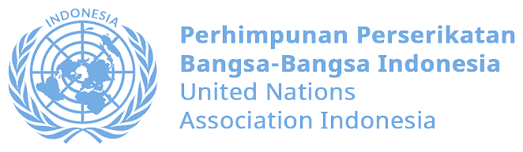

HR — Mentorship Management Officer
Coordinate mentorship programs connecting members with experienced volunteers.
6 slots left
Join a community of young Indonesians who are passionate about making an impact, learning together, and contributing to a better future.
United Nations Association Indonesia (UNA Indonesia) is a nonprofit group established by Indonesian youths in 2021. UNA Indonesia aims to enhance the relationship between Indonesian society, particularly youth and the marginalized, with the United Nations.
UNA Indonesia is an official member of the World Federation of United Nations Associations (WFUNA), engaged with global governance to support the work and goals of the UN in Indonesia and worldwide. UNA Indonesia is also acknowledged by the Ministry of Law and Human Rights of Indonesia as an official association.
UNA Indonesia believes that a sustainable society can only be built through inclusive, inter-generational development — which is why we support local grassroots organizations working within the Sustainable Development Goals, and push for youth involvement and civic participation in global governance.
UNA Indonesia is a youth-led community connecting Indonesian society with global issues through the lens of the United Nations. Every year, we open recruitment for young people who want to learn, contribute, and grow alongside a national network of changemakers.
This recruitment is open to Indonesian youth from any background — students, fresh graduates, and young professionals are all welcome to apply.
Being part of UNA Indonesia means more than joining an organization — it means becoming part of a community that grows together.
Develop your skills through meaningful projects and hands-on experience.
Meet young people across Indonesia who share your passion for impact.
Turn your ideas into real actions and community initiatives.
Be part of a community working toward positive social change.
Choose the position that fits your interest. You can select one preference on the application form.
Coordinate mentorship programs connecting members with experienced volunteers.
6 slots leftRun recruitment cycles and evaluate member performance and engagement.
4 slots leftDesign and deliver training programs to grow members' skills.
4 slots leftManage organizational finances and ensure legal compliance.
3 slots leftResearch global and social issues to shape UNA Indonesia's programs.
5 slots leftTrack program impact and evaluate outcomes against organizational goals.
3 slots leftPlan and run UNAI Hub events and community programs.
5 slots leftWe welcome applicants from every background. What matters most is your willingness to learn and contribute.
Sep 27 – Oct 20
Oct 21 – Oct 27
Oct 28 – Nov 5
Nov 10
No, each applicant can select one position preference per recruitment cycle.
Yes. UNA Indonesia is fully remote, so applicants from anywhere in Indonesia are welcome.
You'll receive an email whenever your status changes, and you can check it anytime on the Application Status page.
Please upload your CV as a PDF file, no larger than 5MB.
Applications close October 20, 2026. We'd love to hear your story.
Apply Now